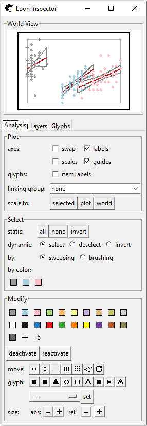
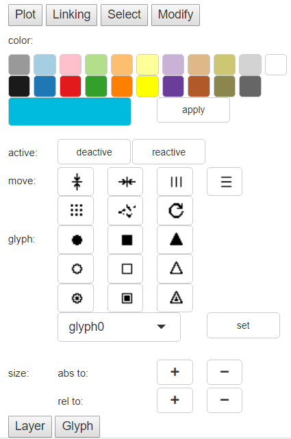

introduction.Rmd
library(loon.shiny)Shiny
The shiny R package simplifies the creation of interactive analysis web pages.
A shiny application is composed of two components, a ui (user interface) and a server function. This ui/server pair are passed as arguments to the shinyApp function that creates a shiny app. The ui (user interface) creates the layout of the app, guiding its users about the analysis by determining the objects that appear and how they can be manipulated on such application. The server function reacts to modifications on the ui, defining the logic of the app. As the user interacts with the page, the server function reacts to make changes in the display.
Loon
The loon R package provides an interactive visualization toolkit for unconstrained, unscripted, and open-ended data exploration. It is intended for data analysts themselves.
An important part of loon’s interactivity is the loon inspector which can can make changes specialized to different loon plots. Typically, the loon inspector has a single instance. The inspector will adapt its display to whichever of the different base loon graphics (scatterplots, graphs, histograms, serial axe plots, etc) is its focus (e.g., the graphic display that last received a mouse or window focus event.
For loon users, it is a challenge to provide a curated analysis that is still somewhat interactive. Snapshots of different steps of the analysis are easily accommodated via RMarkdown, etc. but interaction is not.
Loon.shiny
Loon.shiny transforms loon widgets to appear (with their inspector) in a shiny web app.
loon has a powerful inspector involving almost many of the components considered essential for interaction on each graphic. With loon.shiny, this powerful interface can be inserted into a shiny app to provide a multitude of interactions at once.
loon.shiny provides analysts who explore data in loon the ability to incorporate selected interactive components of that analysis in Rmarkdown. In addition to extending the possibilities for reproducible research, this can further empower the viewer of that research to explore other possibilities within the document itself.
The idea behind the implementation: In loon.shiny, loon widgets are transformed to static loonGrobs created by the R base grid package to provide low-level, general purpose graphics functions. Note that, a loonGrob contains all elements of a loon plot even some not drawn contents, i.e. deactivated elements, hidden layers. All these essential contents are stored inside an empty grob possessing the argument values necessary to draw them. When the server function is fired, the interactivity is realized by editing and redisplaying these loonGrobs.
Consider the classic iris data set.
library(loon.shiny)
library(dplyr)
library(magrittr)
# Loon scatterplot
p <- with(iris,
l_plot(x = Petal.Width,
y = Sepal.Width,
color = Species)
)
# Modify glyph to radial axes glyph.
p['glyph'] <- l_glyph_add_serialaxes(p, data = iris)
# Fit a linear regression on each group (species)
for(s in unique(iris$Species)) {
# sub data set
subdata <- iris %>%
filter(Species == s)
# fitted line
fit <- lm(Sepal.Width ~ Petal.Width, data = subdata)
x <- subdata$Petal.Width
pred <- predict(fit, interval = "confidence")
ord <- order(x)
# Loon pipe model (connected with %T>%)
# Check ```help(`%T>%`)``` for more details
p <- p %T>%
# fitted line
l_layer_line(x = x[ord],
y = pred[, "fit"][ord],
color = "firebrick",
linewidth = 1.5,
index = "end") %T>%
# confidence interval
l_layer_line(x = c(x[ord], rev(x[ord]), x[ord][1]),
y = c(pred[, "lwr"][ord], rev(pred[, "upr"][ord]), pred[, "lwr"][ord][1]),
color = "grey50",
linewidth = 2,
index = "end")
}
loon.shiny(p, plotRegionWidth = "400px")The left panel is a scatterplot which receives mouse can be utilized for direct manipulations. The right panel is an inspector, mainly for indirect manipulations. Compared with the loon one, it is different that is composed of a world view window and six buttons (Plot, Linking, Select, Modify, Layer and Glyph). Each channel will be popped up by pressing the corresponding button. Due to very limited layout space, such design can make the inspector look fresh.

Plot panel:
Zooming and Panning: In loon, they both are realized by direct manipulation with cooperation of mouse and modifier keys <shift>. While, in shiny, function plotOutput() cannot trace right click and scrolling yet. Hence, we build two slider bars to control x and y limits.
Axes: channel axes is a central control of non-data elements display, such as turning on/off labels, scales and guides or flipping the horizontal and vertical axes.
Scale to: channel scale to re-scales the plot interior to some range: range of selected points, range of all points in the plot and range of all plots objects in all layers (world).
Linking panel: since we only have one graph, no linking is required here. We will talk more about this in next section.
Select panel: channel select is mainly utilized to modify points selection. There are two main channels, static and dynamic.
For static, there are three buttons, all, none and invert indicating to select all visible points, deselect all points and invert the current selection status respectively.
For dynamic, it is often used to switch the selection mode.
select: the brushing box is used for highlighting points
deselect: any highlighted points fall into brushing box will be downlighted;
invert: the status of points sweeped by brushing box will be inverted, highlighted to downlighted, downlighted to highlighted.
There are several noticeable difference here:
The select panel in loon.shiny does not involve a by channel. In loon, users can select by either brushing or sweeping. However, in shiny, the mode brushing or sweeping is pre-defined in function plotOutput() and there is no way to update it. Once the app is rendered, the select mode is set and cannot be switched.
Loon.shiny has a sticky radio box. It is the same with <shift> key in loon (the usage of <shift> key in loon can be found in loon vignette or loon talk). This is because shiny does not include trace functions to record key press so far.
by color channel is replaced by check box in shiny, since shiny does not include functions to automatically generate new buttons in server function. However, such changes give an unexpected benefit, color names can be detected easily.
Modify panel: Except the layout, modify panel largely restores the design of the loon.
Color: color buttons are used to modify element colors and the color picker widget provides users more choice.
Activate: activate helps to deactivate or reactivate elements. Deactivate buttons turn selected objects invisible and reactivate buttons reactivate all deactivated points.
Move: Move selected points to common horizontal position, to vertical position, and etc (see loon talk for more details).
Glyph: Change the shape of the points.
Size: Decrease or increase point size.

Layer panel: this panel a simplified version of loon layer tab. The top select box indicates which layer is under activation and the buttons below are used to, move layer up or down a level, make layer visible or invisible, add layer group (deprecated now), delete layer and scale plot region to layer. The last command is to customize the layer label.Glyph panel: it is to modify the appearance of glyphs. Note that different glyphs have very different glyph settings. For example, the settings of serial axes glyphs include whether to show enclosing box, display axes labels and fill the glyph region.Arbitrarily many plots may be created and linked in loon. Package loon.shiny successfully inherits such facility.
Following graph illustrates compound plots. The three graphs are histogram of variable Sepal.Length, scatterplot of Sepal.Width versus Sepal.Length and swapped histogram of variable Sepal.Width (from top to bottom, from left to right). They are colored by species and linked each other.
p1 <- l_plot(iris, linkingGroup = "iris",
showLabels = FALSE)
p2 <- l_hist(iris$Sepal.Length, linkingGroup = "iris",
showLabels = FALSE,
showStackedColors = TRUE)
p3 <- l_hist(iris$Sepal.Width, color = iris$Species,
linkingGroup = "iris",
showLabels = FALSE, swapAxes = TRUE,
showStackedColors = TRUE)
loon.shiny(list(p1, p2, p3),
layout_matrix = matrix(c(2,NA,1,3), nrow = 2, byrow = TRUE),
plotRegionWidth = "400px")Loon inspector is a singleton which means there is only one instance of it. Each kind of graphics (scatterplots, graphs, histograms, serial axes plots, etc) has its own specified inspector. The shown one depends on which display receives the last mouse gesture input or window focus event. However, such design in shiny can be very complex. Instead, we build a navigation bar menu. The inspector can be switched by toggling tabpanel on the bar menu or the last mouse gesture (<double click>) input.
If we brush on any of these plots, the corresponding elements on the rest will be highlighted instantaneously. Linking status can be checked via linking panel.
The principal feature of loon plots which effect the linking of displays is the setting of a common linkingGroup. LinkingGroup is used to identify which group this plot joins. If it is set as “none”, then this plot will not be linked with any of them.
LinkingStates are states to be linked in the same linkingGroup. Unlike loon, programming is forbidden once the app is rendered. Thus, we list all the states can be modified in the linking panel. All elements in these three pictures share the same selected/checked states. Suppose one un-checks the selected check box in scatterplot linking panel, and then brushes the points on scatterplot, the corresponding elements in other two histograms will not be highlighted anymore.
{kind=link}